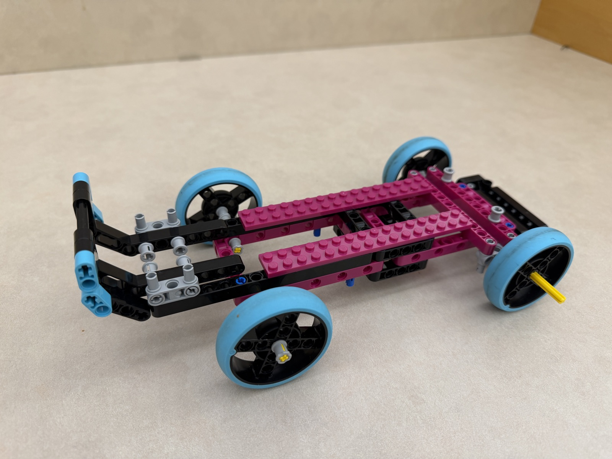
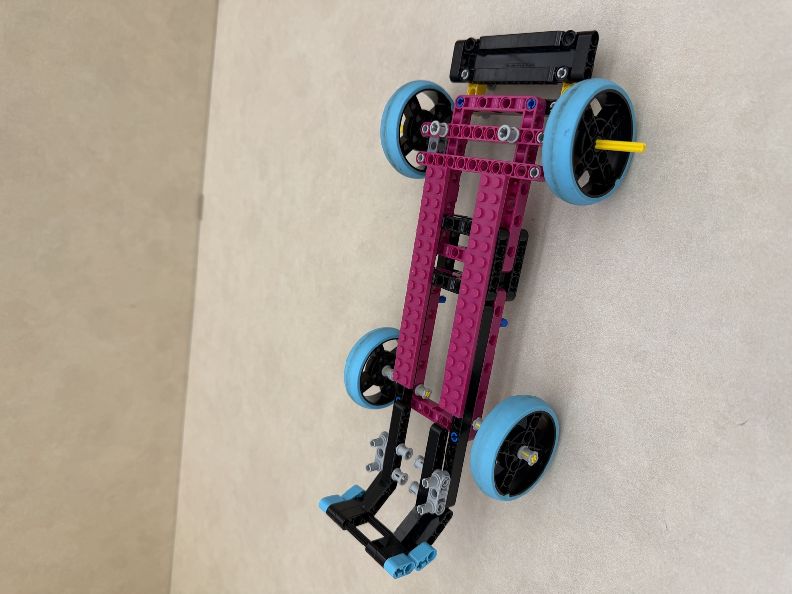
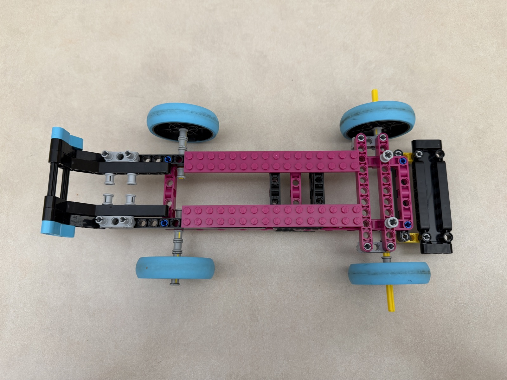

I grew up supporting the Red Bull Formula One racing team. Every weekend, I would watch F1 with my family, all of us supporting our favorite teams (Ferrari & Mercedes). Previously in high school, I spent my free time working on RC cars; fittingly, for this project, I decided to make an F1 model replica.
At first, I found it challenging to create the steering for the car but eventually did it through a combinations of axles and connection pegs. All in all, I thoroughly enjoyed playing around with the LEGO kit and learning the many possibilities one can go about in this project.

